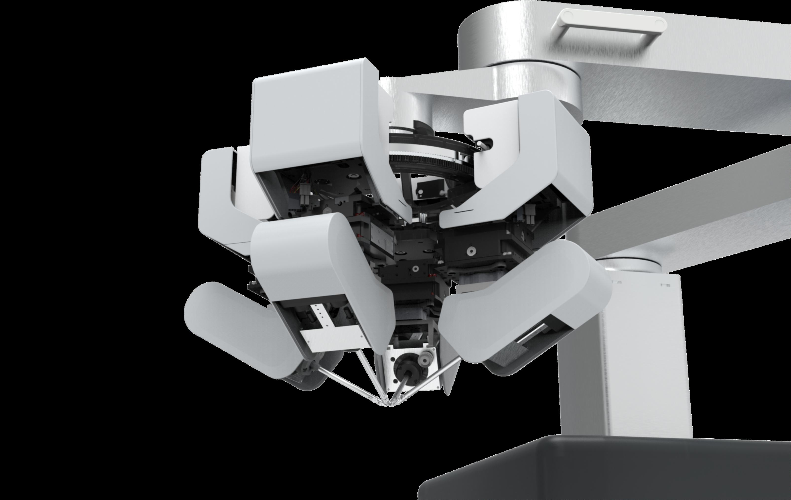
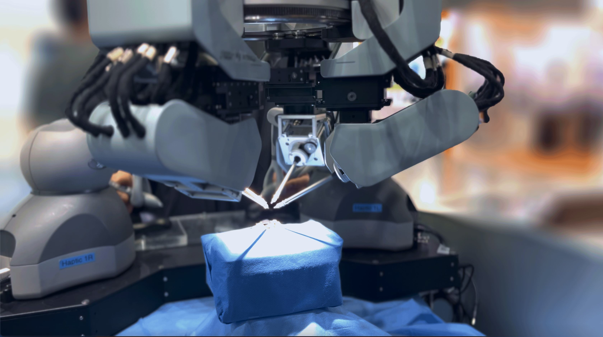

PRISM
Precision Robot for Interactive Super Microsurgery
The Problem
Post-surgery challenges for cancer, diabetes, and accident patients demand precision beyond human capability. The PRISM robot, with 4 independently moving arms in compact spaces, needed an exterior design that communicated both medical trust and cutting-edge technology.
The Process
As an intern at KIST's AI & Robotics Research Division, I led the exterior mockup design through multiple iterations — from early 3D modeling in Rhino to pre-production prototypes. The design evolved through close collaboration with engineers to balance aesthetic refinement with functional requirements like cable routing, arm clearance, and thermal management.
The Outcome
The completed prototype was exhibited at RoboWorld 2023 (KINTEX), demonstrating live surgical precision. The branding system I designed — including logo, video production, and exhibition materials — established PRISM's visual identity for the national research project.

